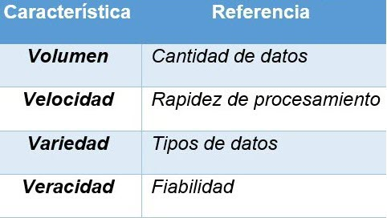

Artículo 7 El futuro del Big Data Analytics a través del Deep Learning
David Alexander Molina Medrano
dalexmolina@gmail.com
Palabras Clave: Big Data Analytics, Deep Learning, Redes neuronales, Base de datos, Inteligencia artificial.
El mundo en la actualidad gira en torno a la tecnología, a la información y a su vez a la capacidad que se tiene de procesarla, algoritmos de gran complejidad forman parte del día a día de los sistemas informáticos; de igual manera la sociedad evoluciona proporcionalmente a como lo hace su necesidad de conocimiento. En el ámbito empresarial la toma de decisiones y la aplicación de estrategias se ven desarrolladas principalmente por una óptima absorción y ejecución de cada pequeño segmento de datos que pueda ser utilizado; y es aquí donde nace una de las grandes propuestas que pretenden mejorar el manejo de la información, el Big Data.
{kind=link}
Fuente: revistagerentepyme.com
El Big Data se refiere principalmente a una cantidad de datos que exceden la capacidad de volumen, procesamiento y complejidad de una base de datos convencional, por lo que, es necesario contar con herramientas que permitan realizar operaciones a gran escala sobre estos. De acuerdo con la Agencia Nacional de Seguridad (NSA, por sus siglas en inglés) actualmente se procesa una cantidad de 1 ,826 Petabytes (1 Petabyte = 1 024 Terabyte) de datos por día. El aumento de la popularidad del Big data se debe principalmente a que las organizaciones cuentan cada vez más con un mayor volumen de datos respecto a la poca capacidad para procesarlos, esto se debe a que es indispensable tener un sistema de almacenamiento que proporcione escalabilidad en conjunto con directivas que permitan realizar consultas no lineales a los datos.
Actualmente existen organizaciones de renombre que utilizan Big Data como principal metodología de procesamiento de datos, entre ellas Google, Yahoo y Facebook, aprovechando los beneficios que proporciona, como, toma de decisiones, reducción de costos, retroalimentación organizacional y dinámica de datos.
Es importante mencionar que, al hablar de grandes cantidades de datos, se presentan 4 elementos fundamentales que los expertos en la materia como, IBM, Gartner Inc. y Viktor Schönberger desarrollaron y que permiten diferenciar al Big Data de otras tecnologías como el Bussiness Intelligence. Estos 4 factores se conocen como: Las cuatro V.

Es importante resaltar que uno de los grandes problemas a los que se enfrenta el Big Data Analytics de los 4 puntos mencionados anteriormente, es la velocidad, la tasa de manejo de datos hoy en día exige que la capacidad para procesarlos sea óptima, a tal punto que la retroalimentación entre el proceso de interpretación de la entrada de datos a su respectiva traducción en información coherente y utilizable para el usuario sea en el menor tiempo posible, es aquí donde una tecnología pretende mejorar considerablemente su desarrollo: Deep Learning.
Deep Learning y el Big Data Analytics
Hablar sobre sistemas autónomos era hace muchos años de la ciencia ficción, actualmente los avances en la Inteligencia Artificial (I.A. o A.I. en ingles) se desarrollan día tras día, permitiendo que su implementación vaya más allá de un simple modelo teórico. La inteligencia artificial pretende desarrollar sistemas computacionales capaces de “razonar”, con el objetivo de resolver problemas siguiendo patrones que se asemejen cada vez más a la interpretación que un ser humano tiene respecto a la realidad.
{kind=link}
Fuente: learning-systems.org
El aprendizaje artificial busca crear respuestas a peticiones complejas, utilizando algoritmos que faciliten la toma de decisiones, actualmente existen sistemas autónomos capaces de interpretar una solicitud y responder a ella, de manera correcta. El principal motor que permite este tipo de desarrollo es lo que se conoce como neural network o redes neuronales (artificiales), las cuales no son más que una simulación artificial de un conjunto de neuronas biológicas, se basan en un modelo conformado por, entrada, procesamiento, salida, a través de la comunicación entre nodos, un ejemplo gráfico se muestra en la siguiente imagen.
{kind=link}
Fuente: ceres.ugr.es
El principal objetivo, es desarrollar un modelo de aprendizaje mediante la intercomunicación de los nodos internos, permitiendo así, definir que conexiones son más o menos significativas, a través, de patrones iterativos que ajustan los valores de cada nodo, de esta manera la red entiende cuando debe crear, modificar o eliminar nodos para dar respuestas precisas en base al modelo de entrada que se esté utilizando, permitiendo así, sentar la base del Deep Learning (Aprendizaje profundo de máquinas). ¿Y cómo el Deep learning pretende mejorar el Big Data?
{kind=link}
Fuente: allerin.com
El aprendizaje profundo se especializa en el manejo de datos en donde la intervención del ser humano es mínima, su característica principal es el análisis no supervisado, a esto añadiendo la capacidad de autoaprendizaje mediante una red de neuronas artificiales, se convierte en el complemento ideal para la optimización del Big Data.
Su principal aplicación radica en la explotación de las 4 V, mencionadas anteriormente, con la manipulación de grandes cantidades de datos sin la necesidad de supervisión, se resuelve el Volumen; la capacidad de procesar datos en cualquier formato de entrada y de diferentes fuentes, toma el factor Variedad; la Velocidad de procesamiento, viene dada por el progreso continuo del sistema, por cada dato procesado, analiza, aprende y mejora la técnica, convirtiéndose en un sistema capaz de predecir la siguiente petición, creando internamente patrones que ayuden a procesar la información en un tiempo mínimo, teniendo en cuenta que la comunicación entre neuronas biológicas (sinapsis) es aproximadamente de 89.41 metros por segundo, y su contraparte artificial pretende acercarse a este número; y por último el factor Veracidad, el cual se resuelve mediante el aprendizaje y entrenamiento de la capa oculta de nodos (procesamiento), los cuales asimilan la manera más óptima de presentar los resultados.
{kind=link}
Fuente: allerin.com
Otra característica muy importante del Deep Learning es la flexibilidad, permite representar los macro datos (volúmenes grandes de datos) que pueden ser desde texto plano hasta multimedia, de una manera abstracta utilizando una indexación semántica, identificando patrones que estén relacionados dentro de un grupo de datos no estructurados aplicando criterios no lineales de recuperación, en comparación a algoritmos que utilizan un conjunto simple de índices, que reducirían notablemente el desempeño. Estos sistemas en conjunto son el futuro de la manipulación de datos, siempre y cuando, no se desarrolle una tecnología que sobrepase la capacidad que tiene la inteligencia artificial dentro del campo de la informática, sin embargo, el aprendizaje profundo al tener la capacidad de predecir emociones no declaradas dentro de un conjunto de datos, puede optimizar considerablemente cada uno de los sistemas que necesiten obtener una respuesta válida y eficaz a través de una simple entrada que cada vez se asemeje más al lenguaje natural.
Conclusiones
El Big Data y el Deep Learning son tecnologías que se complementan mutuamente, la capacidad que tiene esta última dentro del campo de manipulación de datos permite mejorar el rendimiento del Big Data.
La disciplina del Big Data se encuentra posicionada actualmente dentro del conjunto de estrategias de negocios, principalmente si se trata de una organización que maneja grandes cantidades de datos.
Los avances dentro de la Inteligencia Artificial están expandiendo las fronteras en cuanto a la implementación de sistemas autónomos que ayuden al usuario a simplificar tareas.
Referencias
Florida Atlantic University, (2015). Deep learning applications and challenges in big data analytics. 24 de febrero, Recuperado de Journal of Big Data
McGill University; Microsoft; Carnegie Mellon University; Ohio State University; (2017). Conversational Systems in the Era of Deep Learning and Big Data. 17 de Julio, Recuperado de Microsoft